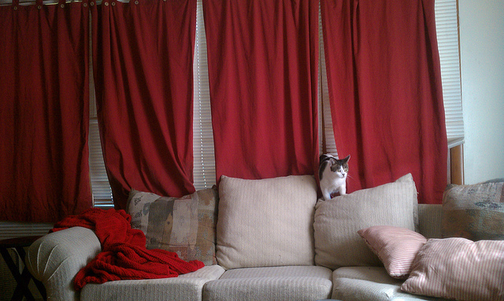
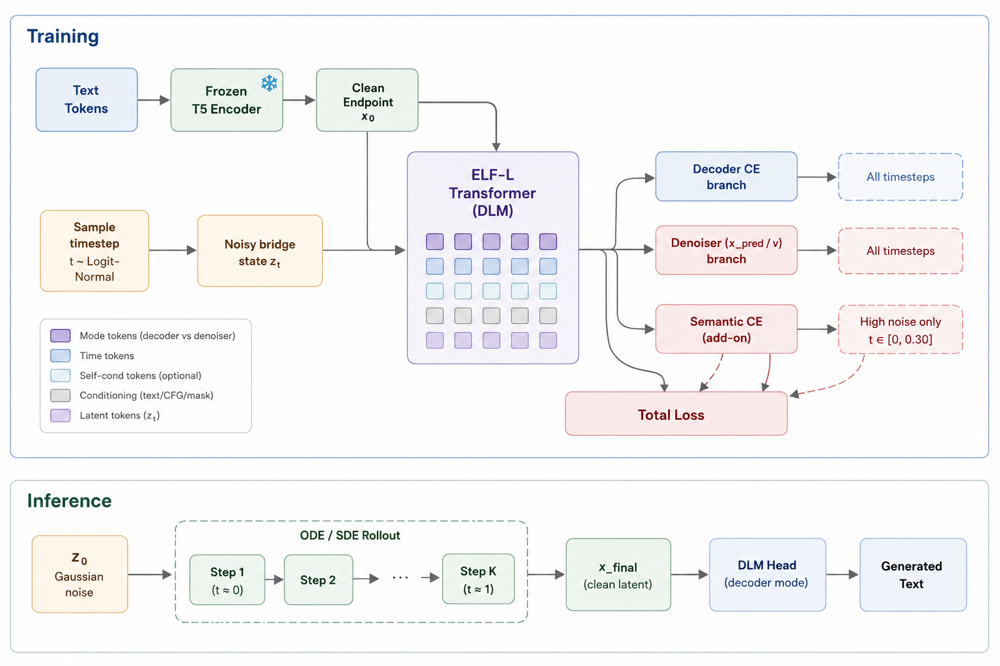

Continuous Language Flow Matching Project
目前实验结果，分析和发现。
项目 Scope 与 Motivation
condition + Gaussian noise -> prompt-specific answer latent -> decoded tokens？
如果这个问题成立，ELF 就不只是一个更快的 diffusion language model，而是一个可以继续接 instruction tuning、multimodal conditioning 和 few-step distillation 的通用连续生成框架。
Why？
Kaiming He 近几年的生成建模路线有一个很清晰的 taste：把离散 tokenization、复杂 pipeline 或过度工程化假设拿掉，让模型直接在连续空间里学习可扩展的生成机制。 Autoregressive Image Generation without Vector Quantization 证明图像生成不一定依赖 VQ token； ELF 进一步把 flow matching 搬到语言 embedding space，展示连续 DLM 可以少步、高质量生成。
We are building on
ELF 原工作已经证明 continuous embedding flow 是一条有希望的语言生成路线，但它没有系统解决 instruction-style SFT 中最关键的 conditional binding：从纯噪声出发时，模型是否真的按当前 prompt 进入正确 answer basin。 本项目的 scope 就是把这个缺口补上，并用 clean decode、condition gap、pure-noise trajectory 和 benchmark gate 证明它。
x_pred 直接对齐 token semanticscondition + pure noise 能 rollout 到 prompt-specific target结论摘要
OWT pretrained checkpoint 在 full IFEval strict prompt 上只有 38/541。
约 15 epochs 的 checkpoint_16995 达到 172/834，已超过 pretrained baseline。
objective128 子集从 13.28% 拉到 53.91%，短答案/二分类任务最先显现收益。
加入 token-level semantic target 后，dp=0.50 的 t=0.1 correct 接近饱和。
早期探索的失败表现
当前算法路线不是从一开始就直接走 Semantic CE。前面先做过多模态 Stage 1/Stage 2 以及常规 language SFT，这几组结果共同指向同一个问题： 模型能学到局部 decode 或局部 denoise，但从高噪声起步时，condition 没有稳定把轨迹拉回当前样本的目标语义。
SigLIP2 frozen，T5 frozen，ELF frozen，只训练 projector。数据是 LLaVA pretrain caption，1 epoch，目标是把视觉 token 接进 ELF latent 序列。
加载 Stage 1 warmup checkpoint，训练 projector + ELF。最终 VQA sanity 的 2 张图片都没有得到可用回答，说明图像条件没有稳定进入生成轨迹。
常规 SFT 后 clean decode 很强，但 IFEval prompt 从 7.02% 变成 6.47%，instruction following 没有真正建立。
t_start=0 pure-noise trajectory 基本失败；这解释了为什么先要回到 text-only CFM，把高噪声语义方向修稳定。
Checkpoint：outputs/elf_l-llava-siglip2-instruct-1024-vt196-hope-8gpu/checkpoint_5770。
多模态 Stage 2 可视化失败样例

Prompt：What are the colors of the bus in the image?
Reference：The bus in the image is white and red.
Model output：

Prompt：Where is the cat positioned in the image?
Reference：The cat is positioned on top of the back of the couch in the living room.
Model output：
数字来自 checkpoint_5402 raw params 的 5 条英文指令 trajectory probe；这里使用 logit-tail final token accuracy，作为前置失败概览。
为什么不能只看训练 loss
AR 语言模型的 teacher forcing loss 是在 gold prefix 下预测 next token，虽然也不能完全代表采样质量，但它和推理时的 token 条件分布更直接相关。
CFM/ELF 的训练目标不同：模型在 sampled bridge state 上做 latent endpoint / velocity matching，同时用 decoder CE 或 Semantic CE 约束部分 latent 的 token semantics。
因此 loss 下降只能说明训练分布上的局部目标变好，不能自动证明模型从 z_0 ~ N(0, I) rollout 时会按 prompt 进入正确答案的语义盆地。
同一 run 中 sem_ce 也从 8.222 降到 4.454，ce 从 0.151 降到 0.075；这说明优化在工作，但还不是能力结论。
远端 checkpoint_22660 final sweep 显示 BoolQ/IFEval 继续变好，但 SVAMP 在 epoch 10 后回落；因此需要按任务切片看 validation，而不是只看总 loss。
| Validation 层级 | 频率 | 要看的指标 | 回答的问题 |
|---|---|---|---|
| 训练健康 | log step | loss / l2 / ce / sem_ce / sem_act，以及 NaN、吞吐、学习率。 |
优化有没有正常进行；不能单独作为模型变好的证据。 |
| Decoder gate | 每个 checkpoint | clean target latent -> token accuracy，prompt/target span 分开看。 | DLM head 是否还能读干净 latent；如果这里失败，后面的 trajectory 分数没有解释价值。 |
| Condition gate | 每个 checkpoint | t=0.1/0.3 controlled denoise，correct / zero / shuffled condition gap。 |
模型是否真的利用 prompt，而不是靠语言先验或训练集常见答案。 |
| Rollout gate | 每个 epoch 或保存点 | t_start=0 ODE/SDE 32/64-step，uniform 和 logit-tail noise，exact match、token accuracy、semantic match。 |
训练目标是否转化成推理路径上的 generation quality。 |
| Capability gate | 里程碑 checkpoint | IFEval、BoolQ、SVAMP、Winogrande 等标准 generation-style benchmark。 | 模型是否在真实任务切片上变好；不同任务允许不同走势，但不能只报最好的一个。 |
| Multimodal gate | text-only gate 通过后 | VQA exact/semantic score，image drop、shuffled image、wrong caption control。 | 图像条件是否进入 flow；避免再次出现 Stage 2 那种能输出文本但不看图的失败。 |
t_start=0 trajectory 有提升、标准 benchmark 至少在目标任务上稳定上升时，才说“训练让模型变好了”。缺失的 gate 记为 incomplete，不默认通过。
模型架构草图
这张图强调 ELF 的训练与推理细节：训练时每条样本在 decoder CE 分支和 denoiser flow 分支之间随机切换；denoiser 分支做 x-prediction，并通过公式转成 velocity 训练；新增的 Semantic CE 只作用在早期高噪声时间段，把 t in [0, 0.30] 的 x_pred 送入 DLM head，直接监督 token 语义。推理时从 t=0 Gaussian noise 出发，ODE/SDE 积分到 t=1，最后用 DLM head 解码文本。

训练路径
训练 batch 内每条样本独立选择 decoder CE 或 denoiser flow 分支。decoder 分支让 DLM head 学会从 noisy latent 还原 token；denoiser 分支预测 clean endpoint x_pred，再换算成 velocity 做 flow matching。
Semantic CE 的位置
当前 checkpoint_16995 对应的主配置采用 range gate，而不是只固定 t=0.30：batch 内采样到的 denoiser rows 只要 t in [0, 0.30]，就把 x_pred 送入 DLM head 直接约束 token 语义。报告中的 t=0.3 是常用诊断点，不等同于唯一训练点。
z_0 Gaussian noise 开始，反复预测 x_pred 并换算 velocity，经过 ODE/SDE rollout 得到 x_final，最后用 DLM head 在 decoder mode 下输出文本。
证据来源与取舍
| 文件 | 主报告保留内容 | 需要压缩掉的内容 |
|---|---|---|
arXiv:2406.11838 / arXiv:2605.10938 |
Kaiming He 近期连续生成路线：去掉 VQ/discrete token 依赖，以及 ELF 在 embedding space 做 flow matching 的动机。 | 外部论文只作为 research framing，不把本项目结果包装成原论文已经证明的结论。 |
elf_multimodal_research_plan.html |
最初多模态 Stage 1/2 方案、SigLIP2 projector 路线、shuffled-image control 的必要性。 | 大量未来 ablation 计划，保留为附录，不进入主线图表。 |
docs/probes/2026-05-29-vqa-probe/ |
Stage 2 VQA sanity 的两张真实图片、prompt/reference、64-step cfg=2 raw generation 和 0/2 可用回答结论。 | 长 raw output 只截取失败特征片段，完整文本保留在 probe README 和 JSONL。 |
elf_multimodal_scaling_plan.html |
Full Tulu3 SFT 失败诊断、short QA overfit、10K ablation、pmean / decoder_prob sweep 的核心数字。 | 数据资产调查和执行清单过长，只保留与结论直接相关的数字。 |
flow_matching_teacher_forcing_notes.html |
为什么 CFM SFT 不等价于 AR teacher forcing，以及 Semantic CE 的算法动机和结果。 | 参数化推导可作为口头解释，不放主视觉页。 |
remote outputs/.../worker_0_20260601_012701.log |
20ep full SFT 的训练 loss、CE、Semantic CE 下降曲线，用来说明优化确实正常。 | 逐 step tqdm 日志太长，只保留首尾和几个中间采样点。 |
remote eval_probes/standard_benchmarks/results/sft_tulu3_english_semce_20ep_epoch_sweep_full_32step/ |
epoch 1/5/10/15/20 的 benchmark 走势，用来说明 loss 下降不等于所有能力单调变好。 | 完整 JSON 保留在远端目录，主报告只放 BoolQ、IFEval、SVAMP、Winogrande 的走势。 |
remote eval_probes/diagnostics_tulu_short_semantic_ce_w050_t030/ |
clean decode、t=0.1 correct/zero/shuffled、t_start=0 trajectory 等 CFM-specific gates。 | 逐样本 probe 输出过细，只保留 gate 级别结论和关键数值。 |
elf_pro_research_plan.html |
项目主线从 NFE 加速降级为 reliable conditional flow 的逻辑。 | NFE 方向池和长期路线太散，主线只保留“先修 SFT，再谈多模态/NFE”。 |
elf_code_review.html |
架构风险：T5-small encoder、decoder branch、bottleneck、采样目标等。 | 完整代码精读不作为本次实验报告主体。 |
实验历程回顾
SigLIP2 frozen encoder + projector + ELF latent flow，目标是 image+text 到 text。
能输出文本，但 VQA probe 不可靠，不能证明模型真正用图。
如果语言 flow 本身不能按 prompt 生成，视觉条件只会放大同一问题。
clean decode 很强，低噪声可修复，但 t=0 pure-noise trajectory 崩。
固定 pmean=-3、decoder_prob=0.50、semantic_ce_weight=0.50 跑全量 SFT。
阶段一与阶段二：多模态失败结论
最初的多模态方案是合理的 minimal baseline：Stage 1 冻结 ELF，只训练 vision projector；Stage 2 解冻 projector + ELF 做图文 instruction。 但实验后发现，模型即使能生成文本，也没有稳定按图和问题回答。文档中的结论是 Stage-2 VQA probe 不可用，继续盲目扩大多模态训练会把 text-only conditional flow 的问题迁移到图文条件上。
阶段三：Full SFT 失败结论
常规 Tulu3 SFT 后，DLM head 可以从真实 target latent 解出正确 token，controlled denoise 在低到中噪声也会利用 prompt。 失败发生在高噪声起步：从纯噪声 reverse 时，第一批语义方向已经落到错误 answer basin，后续 ODE 只是在错误方向上积分。
Full SFT 为什么失败：Trajectory Gap
| Probe | 关键结果 | 解释 |
|---|---|---|
| Clean decode | seen-style train short token acc 99.57%，自造 instruction probe 100%。 | decoder head 没坏，target latent 可以被还原成 token。 |
| Controlled denoise | t=0.5 correct prompt x_mse 0.084，zero/shuffled 为 0.184/0.188；t=0.3 correct 为 0.153，zero/shuffled 为 0.371/0.403。 | 低/中噪声区会利用 prompt，不是完全忽略条件。 |
| Pure-noise trajectory | t_start=0 uniform token acc 0.0049，logit-tail 0.0000，exact 0/5。 | 失败点是 high-noise semantic routing，而不是最后一步 decode。 |
消融一：真实分布比合成分布难在哪里
消融二：确定两个较好的超参
| 超参 | 为什么保留 | 证据 |
|---|---|---|
denoiser_p_mean=-3.0 |
显著增加高噪声区域训练密度，直接针对 early semantic routing。 | t=0.1 correct 从 0.531 提升到 0.632，t=0.3 从 0.537 提升到 0.664。 |
decoder_prob=0.50 |
加强 CE 分支，让 decoder-facing token semantics 更早进入 denoiser 的预测空间。 | controlled high-noise 最强：t=0.1 correct 0.667，t=0.5 correct 0.691。 |
decoder_prob=0.25 control |
保留为 trajectory-stable anchor，防止新 loss 只提升单步 denoise。 | pmean=-3, dp=0.25 的 t_start=0 uniform 为 0.890，高于 dp=0.50 的 0.762。 |
算法改进：Token-Level Semantic Target Supervision
新 Loss 的动机
原始 L2 监督要求 high-noise x_pred 在连续 latent 空间接近 target，但语言最终由 DLM head 离散化。 latent 距离小不等于 token argmax 正确。Semantic CE 直接把高噪声 x_pred 交给 DLM head，监督它预测 target tokens。
CE(DLM(x_pred_high_noise), target_tokens), t in [0, 0.30]
为什么不是 decoder shortcut
结果中 correct prompt 接近饱和，但 zero/shuffled prompt 仍接近 0。 这说明收益来自 prompt-conditioned semantic routing，而不是 decoder 靠答案先验偷懒。
| 实验 | clean | t=0.1 correct | t=0.1 shuffled | t_start=0 uniform | exact | 结论 |
|---|---|---|---|---|---|---|
| baseline | 0.997 | 0.531 | 0.007 | 0.799 | 10/16 | 常规 SFT recipe 不够。 |
| pmean=-3, dp=0.50 | 0.993 | 0.667 | 0.004 | 0.762 | 8/16 | high-noise 有改善，但 trajectory 未同步增强。 |
| semantic CE, dp=0.25 | 1.000 | 0.993 | 0.001 | 0.906 | 13/16 | 单步 high-noise 几乎打通，trajectory 也提升。 |
| semantic CE, dp=0.50 | 1.000 | 0.992 | 0.001 | 0.953 | 14/16 | 当前 full SFT 主设置。 |
预训练基线：标准生成式评测
用 generation-style benchmark runner 验证原始 pretrained checkpoint 是否具备 instruction-following 能力。 因为 CFM 不提供 AR log-likelihood，这里统一让模型生成可解析答案，再按 benchmark-specific parser 或官方 IFEval scorer 打分。
Benchmark 对比表：CFM Ablation 与 GPT-2 参照
checkpoint_5402 使用全量 SFT 数据，但没有 high-noise recipe、没有 decoder probability ablation 后的设置，也没有 semantic CE。
它在 IFEval prompt 上从 pretrained 的 7.02% 变成 6.47%，说明早期失败不是数据量不够，而是训练目标没有显式解决 high-noise semantic routing。
当前 checkpoint_16995 约 15 epochs，使用 pmean=-3、decoder_prob=0.50 和 token-level semantic supervision。
| Benchmark | CFM Pretrained | CFM Naive Full SFT | CFM Semantic CE SFT | GPT-2 Large Pretrained | GPT-2 Large Alpaca SFT | 备注 |
|---|---|---|---|---|---|---|
| IFEval strict prompt | 7.02% | 6.47% | 10.17% | 18.48% | 10.17% | full 541 prompts；naive SFT 不升反降，Semantic CE 才开始恢复。 |
| IFEval strict instruction | 15.71% | 15.95% | 20.62% | 28.78% | 18.94% | full 834 instructions；当前 CFM SFT 相对 baseline +4.92 pp。 |
| SVAMP | 1.67% | 3.33% | 5.33% | 2.33% | 1.67% | full 300；CFM Semantic CE 在简单算术上高于 GPT-2 参照。 |
| BoolQ | 13.28% | 20.31% | 53.91% | 63.28% | 67.97% | objective128；短答案/Yes-No 是 SFT 最先变强的能力。 |
| ARC-Challenge | 3.12% | 4.69% | 3.12% | 9.38% | 33.59% | objective128；知识多选题仍主要是数据覆盖和格式能力差距。 |
| OpenBookQA | 0.78% | 3.91% | 2.34% | 14.84% | 27.34% | objective128；GPT-2 SFT 明显受益，CFM 仍未稳定。 |
| HellaSwag | 1.56% | 7.81% | 5.47% | 1.56% | 20.31% | objective128；naive SFT 可能学到局部选择格式，但 instruction following 不成立。 |
| MMLU-Pro | 0.78% | 1.56% | 3.12% | 5.47% | 7.03% | objective128；所有 600M 级模型都低，当前不是主结论指标。 |
| TruthfulQA-MC | 5.47% | 11.72% | 10.16% | 3.12% | 85.94% | objective128；GPT-2 SFT 异常高，需结合 parser/选项格式复核，暂作外部参照。 |
| Winogrande | 2.34% | 3.91% | 8.59% | 14.06% | 42.97% | objective128；CFM 有涨势，但 AR SFT 仍领先很多。 |
| GSM8K | 0.00% | 1.56% | 0.00% | 2.34% | 2.34% | objective128；没有 reasoning/post-training 时不应作为核心判断。 |
CFM result paths：eval_probes/standard_benchmarks/results/sft_tulu3_naive_ckpt5402_interim_quick_32step/，
eval_probes/standard_benchmarks/results/sft_tulu3_english_semce_ckpt16995_interim_quick_32step/。
GPT-2 result paths：eval_probes/standard_benchmarks/results/ar_gpt2_large_pretrained_interim_quick_raw/，
eval_probes/standard_benchmarks/results/ar_gpt2_large_alpaca_sft_interim_quick_alpaca/。
GPT-2 pretrained 使用 raw prompt，GPT-2 Alpaca-SFT 使用 Alpaca prompt template 和 slow tokenizer。
报告结构模板
| Section | 核心结论 | 主证据图 |
|---|---|---|
| 1. Scope 与 Motivation | 本项目不是只复现 ELF，而是证明 continuous flow matching 可以做可靠 instruction-style conditional generation。 | Kaiming continuous-generation framing + scope matrix。 |
| 2. 早期失败证据 | 多模态 Stage 2 VQA probe 和 naive language SFT 都失败，说明问题不是单一视觉 projector 或数据规模问题。 | VQA image cards + naive SFT delta / trajectory chart。 |
| 3. 训练验证策略 | CFM 的 loss 下降只能说明局部 bridge objective 在变好，不能证明纯噪声 rollout 的 generation quality 变好。 | loss trend + epoch sweep + validation gate table。 |
| 4. 问题定义 | 原始 ELF pretrained checkpoint 可以生成文本，但不能做 instruction following。 | Baseline benchmark bar chart。 |
| 5. 失败定位 | 常规 Full SFT 不是完全没学，decoder 和低噪声修复都可用，真正崩在 high-noise semantic routing。 | Trajectory gap line chart。 |
| 6. 范式可行性 | Short QA overfit 可以从纯噪声训通，所以不是 CFM 语言建模范式直接失败。 | Synthetic 128 vs Full SFT line chart。 |
| 7. Recipe 发现 | pmean=-3 和 decoder_prob=0.50 是当前最合理的主 recipe，dp=0.25 保留为 control。 | pmean / decoder_prob ablation bar chart。 |
| 8. 新算法贡献 | Semantic CE 直接监督 high-noise x_pred 的 token semantics，把 t=0.1 correct 从 0.53/0.67 拉到 0.99。 | Semantic CE gain bar chart。 |
| 9. 下一步 | 20ep final checkpoint 已证明 SFT 策略有效；下一步转向 data recipe、targeted objective 和 multimodal gate 设计。 | Benchmark growth line chart + comparison table。 |
当前正在跑的实验
当前主线在跑 semantic CE schedule + multi-t 变体。它不是换数据或扩大 batch，而是在已验证有效的 full English Tulu3 SFT recipe 上，只改 Semantic CE 的监督方式，用来判断“更密、更偏高噪声的语义监督”是否能继续改善 pure-noise trajectory 和标准 benchmark。
| 实验 | 当前状态 | 相对上一版 full SFT 的改进 | 希望验证什么 |
|---|---|---|---|
elf_l-tulu3-english-semce-sched-multit-pmean_m3-dp050-w050-t030-20ep-hope-32gpu |
32GPU HOPE run 仍在继续；为了更早判断算法方向，已先取 epoch15 checkpoint_16995 跑完 full benchmark。结果路径：eval_probes/standard_benchmarks/results/sft_tulu3_english_semce_sched_multit_epoch15_full_32step/epoch_15_checkpoint_16995/。 |
保持数据、20 epochs、global batch 512、OWT init、pmean=-3、decoder_prob=0.50、semantic_ce_weight=0.50 不变；新增 time-dependent Semantic CE schedule，并显式加入 t=0.05, 0.15, 0.30 三个 semantic target。 |
同 epoch15 对比显示，新算法在 IFEval、TruthfulQA、Winogrande、ARC/OpenBookQA 上明显增益，但 BoolQ 回退；说明 multi-time semantic supervision 有实际收益，同时需要继续诊断 yes/no 校准和短答案格式偏置。 |
| Benchmark | 旧 Semantic CE epoch15 | Schedule + Multi-t epoch15 | Delta | 旧 Semantic CE epoch20 | 备注 |
|---|---|---|---|---|---|
| IFEval strict prompt | 10.17% | 11.83% | +1.66 pp | 11.09% | epoch15 已超过旧版 final。 |
| IFEval strict instruction | 20.62% | 23.14% | +2.52 pp | 21.82% | instruction following 明确提升。 |
| BoolQ | 48.59% | 43.73% | -4.86 pp | 50.80% | 主要回退项，需要检查 yes/no 输出校准。 |
| SVAMP | 5.33% | 6.00% | +0.67 pp | 4.00% | 小幅增益。 |
| TruthfulQA-MC | 12.36% | 23.62% | +11.26 pp | 16.89% | 最大增益，说明语义 target 更强。 |
| Winogrande | 7.58% | 10.42% | +2.84 pp | 8.45% | commonsense/choice parsing 有提升。 |
| ARC-Challenge | 4.27% | 5.38% | +1.11 pp | 4.52% | 知识多选题小幅提升。 |
| OpenBookQA | 4.80% | 5.40% | +0.60 pp | 3.20% | 相对旧版 final 也更好。 |
| HellaSwag | 3.51% | 3.57% | +0.07 pp | 3.01% | 基本持平。 |
| MMLU-Pro | 2.75% | 2.66% | -0.09 pp | 2.38% | 接近噪声区间。 |
| GSM8K | 0.83% | 1.36% | +0.53 pp | 1.36% | 非主结论指标。 |